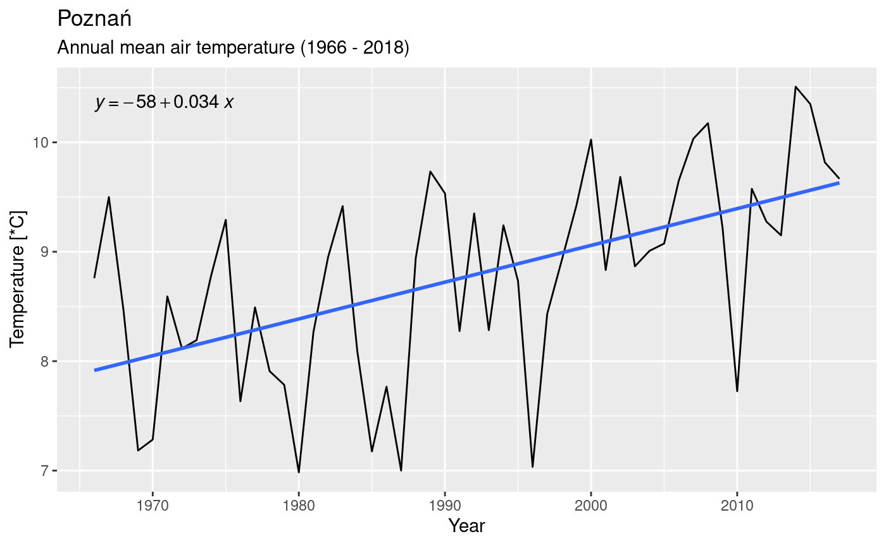
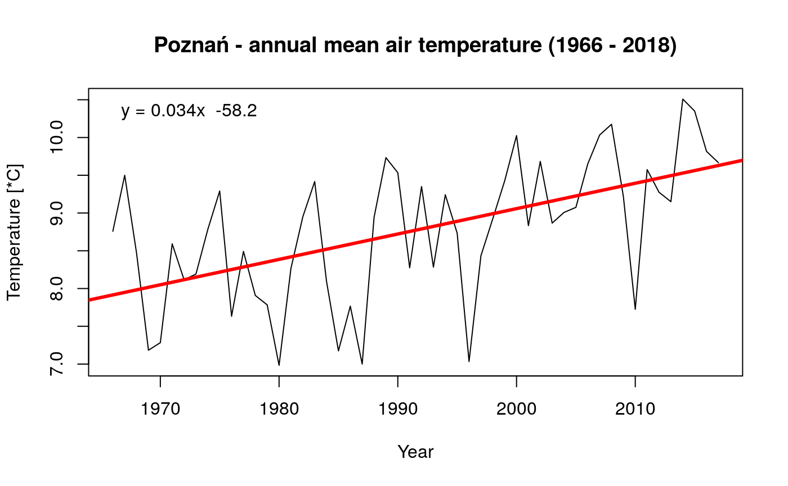
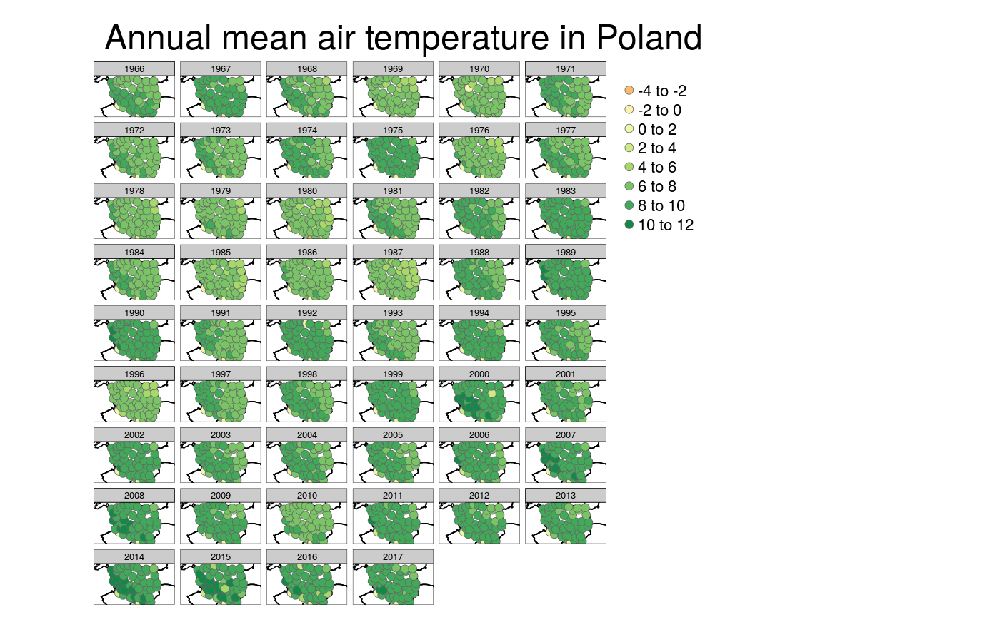
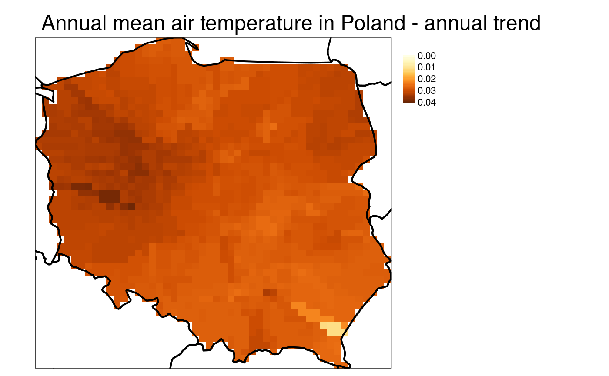

usecase.Rmd##
## Attaching package: 'dplyr'## The following objects are masked from 'package:stats':
##
## filter, lag## The following objects are masked from 'package:base':
##
## intersect, setdiff, setequal, unionmeteo_poz = meteo("monthly", rank = "synop", year = 1966:2018, station = "POZNAŃ") %>%
select(id, station, yy, mm, t2m_mean_mon) %>%
group_by(yy) %>%
summarise(t2 = mean(t2m_mean_mon))
ggplot(meteo_poz, aes(yy, t2)) +
geom_line() +
geom_smooth(method = "lm", se = FALSE) +
labs(title = "Poznań",
subtitle = "Annual mean air temperature (1966 - 2018)",
x = "Year",
y = "Temperature [*C]") +
ggpubr::stat_regline_equation()
# or as an alternative:
plot(
meteo_poz$yy,
meteo_poz$t2,
type = "l",
xlab = "Year",
ylab = "Temperature [*C]",
main = "Poznań - annual mean air temperature (1966 - 2018)"
)
model = lm(t2 ~ yy, data = meteo_poz)
abline(model, col = "red", lwd = 3)
legend("topleft",
legend = paste0("y = ", round(coef(model)[2], 3), "x ",
round(coef(model)[1], 1)), bty = "n")
## Linking to GEOS 3.7.0, GDAL 2.4.0, PROJ 5.2.0## Registered S3 method overwritten by 'xts':
## method from
## as.zoo.xts zoo## Loading required package: sp##
## Attaching package: 'raster'## The following object is masked from 'package:dplyr':
##
## selectlibrary(rnaturalearth)
# downloads monthly data and calculates annual mean air temperature
meteo_mon = meteo("monthly", rank = "synop", year = 1966:2018, coords = TRUE) %>%
dplyr::select(id, station, X, Y, yy, mm, t2m_mean_mon) %>%
group_by(yy, id, station, X, Y) %>%
summarise(t2 = mean(t2m_mean_mon))
# creates spatial object
meteo_mon_sp = meteo_mon %>%
filter(!is.na(X)) %>%
st_as_sf(coords = c("X", "Y"), crs = 4326)
# plots spatial data
europe = ne_countries(scale = "medium", continent = "Europe", returnclass = "sf")
tm_shape(europe) +
tm_borders(col = "black", lwd = 2) +
tm_shape(meteo_mon_sp) +
tm_symbols(col = "t2", title.col = "") +
tm_facets(by = "yy") +
tm_layout(main.title = "Annual mean air temperature in Poland")## Variable "t2" contains positive and negative values, so midpoint is set to 0. Set midpoint = NA to show the full spectrum of the color palette.
# prepares spatial data in a projected crs
meteo_mon_sp = st_transform(meteo_mon_sp, 2180)
poland = filter(europe, iso_a3 == "POL") %>%
st_transform(2180)
# creates an empty grid
meteo_grid = raster(poland, ncol = 50, nrow = 50)
# splits data by year, creates idw models, and make interpolations
meteo_inter = meteo_mon_sp %>%
group_split(yy) %>%
purrr::map(~gstat(formula = t2~1, data = ., #idw
nmax = 10, set = list(idp = 0.1))) %>%
purrr::map(~interpolate(meteo_grid, .)) %>%
stack()## [inverse distance weighted interpolation]
## [inverse distance weighted interpolation]
## [inverse distance weighted interpolation]
## [inverse distance weighted interpolation]
## [inverse distance weighted interpolation]
## [inverse distance weighted interpolation]
## [inverse distance weighted interpolation]
## [inverse distance weighted interpolation]
## [inverse distance weighted interpolation]
## [inverse distance weighted interpolation]
## [inverse distance weighted interpolation]
## [inverse distance weighted interpolation]
## [inverse distance weighted interpolation]
## [inverse distance weighted interpolation]
## [inverse distance weighted interpolation]
## [inverse distance weighted interpolation]
## [inverse distance weighted interpolation]
## [inverse distance weighted interpolation]
## [inverse distance weighted interpolation]
## [inverse distance weighted interpolation]
## [inverse distance weighted interpolation]
## [inverse distance weighted interpolation]
## [inverse distance weighted interpolation]
## [inverse distance weighted interpolation]
## [inverse distance weighted interpolation]
## [inverse distance weighted interpolation]
## [inverse distance weighted interpolation]
## [inverse distance weighted interpolation]
## [inverse distance weighted interpolation]
## [inverse distance weighted interpolation]
## [inverse distance weighted interpolation]
## [inverse distance weighted interpolation]
## [inverse distance weighted interpolation]
## [inverse distance weighted interpolation]
## [inverse distance weighted interpolation]
## [inverse distance weighted interpolation]
## [inverse distance weighted interpolation]
## [inverse distance weighted interpolation]
## [inverse distance weighted interpolation]
## [inverse distance weighted interpolation]
## [inverse distance weighted interpolation]
## [inverse distance weighted interpolation]
## [inverse distance weighted interpolation]
## [inverse distance weighted interpolation]
## [inverse distance weighted interpolation]
## [inverse distance weighted interpolation]
## [inverse distance weighted interpolation]
## [inverse distance weighted interpolation]
## [inverse distance weighted interpolation]
## [inverse distance weighted interpolation]
## [inverse distance weighted interpolation]
## [inverse distance weighted interpolation]
## [inverse distance weighted interpolation]# calculates a trend for each pixel
years = 1966:2018
meteo_trend = calc(meteo_inter, fun = function(x) {summary(lm(x ~ years))$coefficients[2]}) %>%
mask(poland)
# plots a trend map
tm_shape(meteo_trend) +
tm_raster(style = "cont", title = "", breaks = seq(0, 0.04, 0.01)) +
tm_shape(europe) +
tm_borders(col = "black", lwd = 2) +
tm_layout(legend.outside = TRUE,
main.title = "Annual mean air temperature in Poland - annual trend")